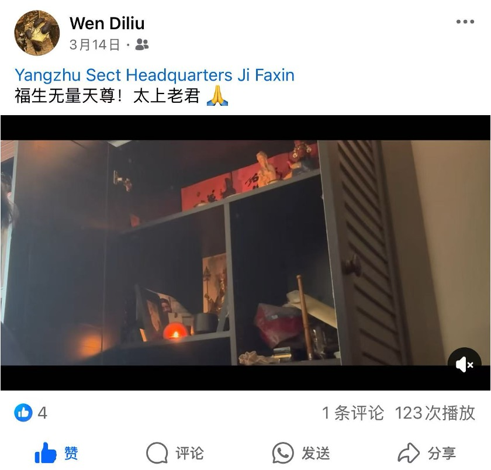

在诵读中，聆听经典
国际道教日举行道德经诵经比赛，吸引各国道教爱好者参加。
A living tradition. A shared future.
传承道教智慧，促进文化交流，服务当代社会。
了解协会美国阳翥道教协会成立于2025年，总部设于纽约。我们致力于弘扬道教文化、促进国际道教交流、服务社区大众，让传统智慧在当代社会中延续。
我们的使命与传承
国际道教日举行道德经诵经比赛，吸引各国道教爱好者参加。
积极联络道教团体与学术机构，搭建跨文化交流的桥梁，在相互尊重中增进理解。